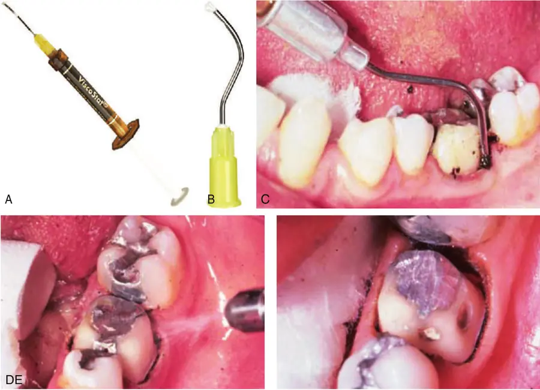

نسخه استخراجشده؛ ترجمه یا تأیید علمی انجام نشده است. وضعیت: captured
بیمار ۶۲ ساله با پرفشاری خون و سابقهی آنژین برای سه روکش فک پایین آمده. با دو کارپول بیحسی اپینفریندار بیحس شده و دانشجو برای هر سه دندان نخ آغشته به اپینفرین برداشته است. این انتخاب را قبول میکنی؟
مادهی کنار زدن لثه سه شرط دارد: لثه را کنار بزند و خون را بند بیاورد، آسیب برگشتناپذیر به لثه نزند، و اثر سیستمیک ناخواستهاش کم باشد. نخ آغشته به اپینفرین راسمیک ۸٪ روزگاری پرکاربردترین راه بود، ولی شرط سوم را همیشه ندارد.
جای اپینفرین فقط کمک در موارد دشواری است که مواد دیگر جواب ندادهاند، آن هم در بیمار سالم بیسابقهی قلبیعروقی.
کلرید آلومینیوم و سولفات فریک آسیب بافتی کمی دارند و نشت مایع سولکوس را هم مهار میکنند؛ برای همین قابضهای رایج امروزند. زاج (سولفات آلومینیوم پتاسیم) و سولفات آلومینیوم هم به کار میروند. مواد سوزانندهای مثل اسید تریکلرواستیک به خاطر آسیب لثه کنار گذاشته شدهاند.

اشتباه رایج: قالبگیری روی خونریزی فعال. اگر خونریزی بند نیامد، قالب را رها کن. لثهی ملتهب خونریزی میکند؛ اغلب تصمیم درست عقب انداختن قالب است: روکش موقت را اصلاح کن، بهداشت را آموزش بده و دهانشویهی کلرهگزیدین تجویز کن.